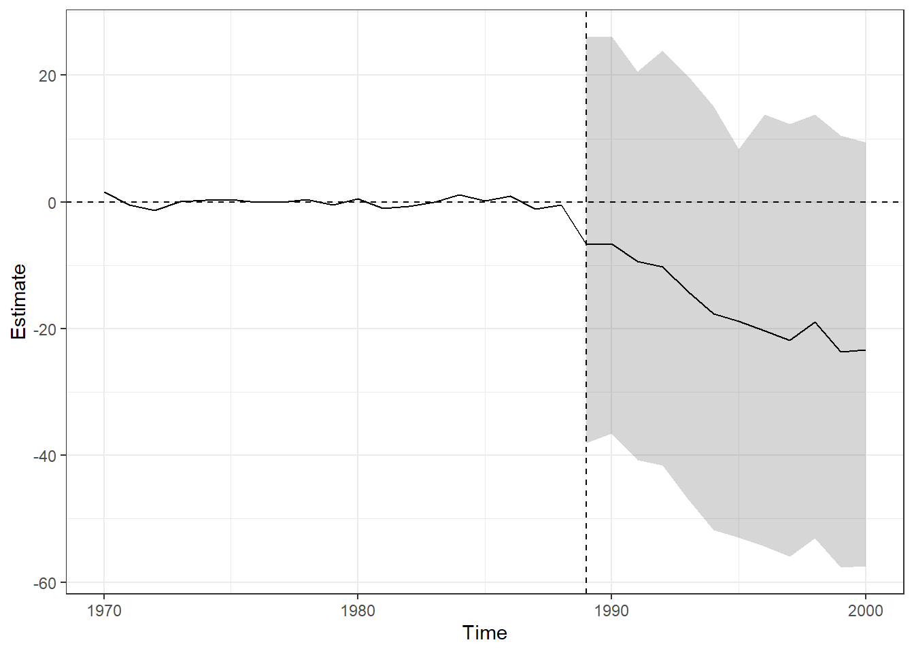
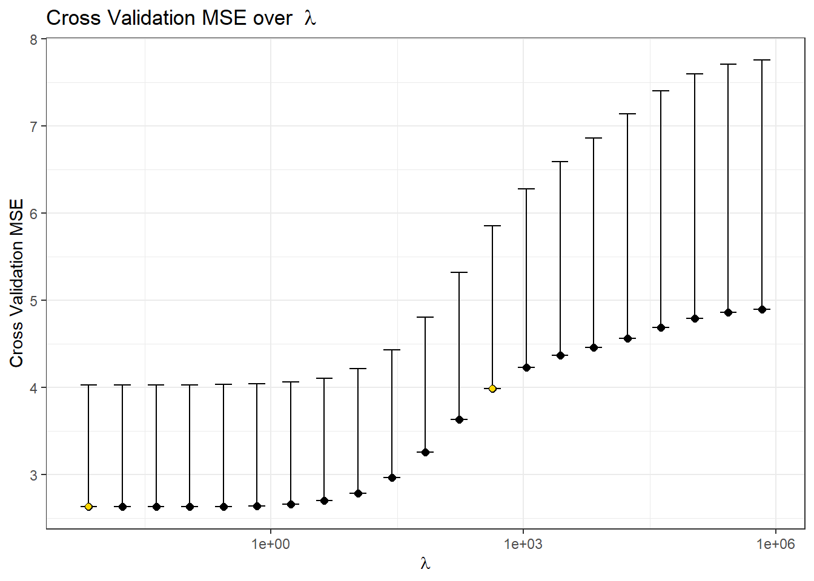

Kohandatud sünteetilise kontrolli meetod (augmented synthetic control method, ASCM) täiendab sünteetilist kontrolli tulemusmudeliga. Meetod on eriti kasulik olukorras, kus tavalise sünteetilise kontrolli kaaludega ei õnnestu käsitletava üksuse sekkumiseelset arengut piisavalt hästi lähendada. Meetodi põhiidee on kasutada regressioonimudelit allesjäänud sobitamisvea hinnanguliseks korrigeerimiseks (Ben-Michael, Feller ja Rothstein, 2021).
Meetodi idee
Ühe käsitletava üksuse korral kirjutame sekkumiseta tulemuse prognoosi lihtsustatud kujul
Esimene liige on tavalise sünteetilise kontrolli tulemus. Sulgudes olev liige korrigeerib käsitletava üksuse ja kaalutud kontrollüksuste prognoositud tulemuste erinevust. \(X_i\) tähistab sekkumiseelseid tulemusi ja võimalikke muid tunnuseid ning \(\widehat m_t(X_i)\) regressioonimudeli prognoosi. Mõjuhinnang perioodil \(t\) on
Üks võimalus on kasutada kantregressiooni (ridge regression), kus regulariseerimine piirab mudeli ülemäärast kohandumist. Selle valiku korral saab korrigeeritud hinnangut käsitleda ka muudetud kaaludega sünteetilise kontrollina. Erinevalt klassikalisest sünteetilisest kontrollist võivad need efektiivsed kaalud olla negatiivsed: meetod võib ekstrapoleerida kontrollüksuste vahemikust väljapoole. See võib parandada sobivust, kuid muudab tulemuse sõltuvamaks mudelist ja suur ekstrapolatsioon võib olla riskantne.
ASCM ja eelnevas peatükis esitatud SDID lahendavad probleemi erinevalt. ASCM korrigeerib sünteetilise kontrolli sekkumiseelse sobituse jääkvea tulemusmudeliga; SDID kasutab üksuste ja ajaperioodide kaale ning lahutab sekkumiseelsed erinevused. Kumbki meetod ei muuda ebausaldusväärset kontrollrühma automaatselt sobivaks. Võrdle tulemusi alternatiivsete doonorite ja sekkumiseelsete perioodidega ning arvesta, et mõjuhinnangu põhjuslik tõlgendus sõltub uurimisdisainist ja tulemusmudeli sobivusest.
Näide: California tubakapoliitika
Kasutame samu andmeid ja sama sekkumise algusaastat nagu SDID näites. Võrdluseks hindame esmalt sünteetilise kontrolli ilma regressiooniparanduseta ning seejärel kantregressioonil põhineva ASCM-i. Mõlemad kasutavad samu üksusi ja sekkumiseelseid tulemusi; need ei pruugi anda sama tulemust kui eespool Synth-paketiga hinnatud mudel, kus kasutati teisi selgitavaid tunnuseid ja sobitamisperioode.
# Paigalda üks kord vajaduse korral:# install.packages("remotes")# remotes::install_github("synth-inference/synthdid")# remotes::install_github("ebenmichael/augsynth")library(synthdid)library(augsynth)data("california_prop99", package ="synthdid")# Selged nimed ja eraldi objekt: 1989 on esimene sekkumisjärgne aastacal_as <-data.frame(osariik = california_prop99$State,aasta = california_prop99$Year,pakke = california_prop99$PacksPerCapita,kasitlus = california_prop99$treated)# Võrdlus: sünteetiline kontroll ilma tulemusmudelitascm_as <-augsynth( pakke ~ kasitlus, osariik, aasta,data = cal_as, t_int =1989,progfunc ="None", scm =TRUE)
One outcome and one treatment time found. Running single_augsynth.
One outcome and one treatment time found. Running single_augsynth.
Kui lambda väärtust ei määrata, valib pakett kantregressiooni regulariseerimise taseme ristvalideerimise abil. Tulemuste kokkuvõtete ja jooniste koostamine võib võtta aega.
# Mõjuhinnangud ja sobivuse näitajadset.seed(123)scm_kokkuvote <-summary(scm_as)ascm_kokkuvote <-summary(ascm)
Tavaline SCM
scm_kokkuvote
Call:
single_augsynth(form = form, unit = !!enquo(unit), time = !!enquo(time),
t_int = t_int, data = data, progfunc = "None", scm = TRUE)
Fit to 39 units and 19+12 = 31 time points; 1 treated at aasta 1989.
6 donor units used with weights of 0.015 to 0.394
Average ATT Estimate (p Value for Joint Null): -19.5 ( 0 )
L2 Imbalance: 7.220
Percent improvement from uniform weights: 89.7%
Avg Estimated Bias: NA
Inference type: Conformal inference
Time Estimate 95% CI Lower Bound 95% CI Upper Bound p Value
1989 -8.440 -49.652 31.089 0.108
1990 -9.207 -48.736 32.004 0.108
1991 -12.634 -47.117 28.577 0.052
1992 -13.729 -54.940 27.482 0.066
1993 -17.534 -53.698 15.267 0.058
1994 -22.049 -63.260 15.798 0.050
1995 -22.858 -64.069 16.671 0.044
1996 -23.997 -65.209 13.850 0.042
1997 -26.261 -65.790 11.586 0.055
1998 -23.338 -64.549 7.781 0.065
1999 -27.520 -68.731 13.691 0.044
2000 -26.597 -67.808 12.932 0.060
Keskmine mõju on -19.5.
Kohandatud mõjuhinnang
ascm_kokkuvote
Call:
single_augsynth(form = form, unit = !!enquo(unit), time = !!enquo(time),
t_int = t_int, data = data, progfunc = "Ridge", scm = TRUE)
Fit to 39 units and 19+12 = 31 time points; 1 treated at aasta 1989.
38 donor units used with weights of 0.001 to 0.370
Average ATT Estimate (p Value for Joint Null): -16 ( 0.079 )
L2 Imbalance: 3.198
Percent improvement from uniform weights: 95.4%
Avg Estimated Bias: -3.561
Inference type: Conformal inference
Time Estimate 95% CI Lower Bound 95% CI Upper Bound p Value
1989 -6.679 -38.016 26.051 0.058
1990 -6.579 -36.523 26.151 0.601
1991 -9.403 -40.740 20.541 0.138
1992 -10.220 -41.557 23.903 0.298
1993 -14.129 -46.858 19.994 0.039
1994 -17.651 -51.773 15.079 0.043
1995 -18.781 -52.904 8.378 0.081
1996 -20.272 -54.395 13.850 0.106
1997 -21.840 -55.962 12.283 0.367
1998 -18.925 -53.047 13.805 0.215
1999 -23.595 -57.717 10.528 0.100
2000 -23.359 -57.481 9.371 0.042
Hinnang on pisut väiksem: -16.
Tulemused joonisel.
Tavaline SCM hinnang:
# Erinevus käsitletava ja sünteetilise kontrolli vahel ajasplot(scm_kokkuvote)
Kohandatud mõjuhinnang on pisut väiksemm.
plot(ascm_kokkuvote)

Ristvalideerimise tulemused regulariseerimise valikul
plot(ascm, plot_type ="cv")

Võrdle sekkumiseelset sobivust ja keskmisi sekkumisjärgseid mõjuhinnanguid. summary() esitab nii keskmise mõjuhinnangu kui ka aastapõhised hinnangud; vaikimisi põhinevad aastapõhised usaldusvahemikud konformaalsel järeldamisel. Need on perioodipõhised, mitte korraga kõiki aastaid katvad vahemikud, ning nende kehtivus sõltub vastava meetodi eeldustest.